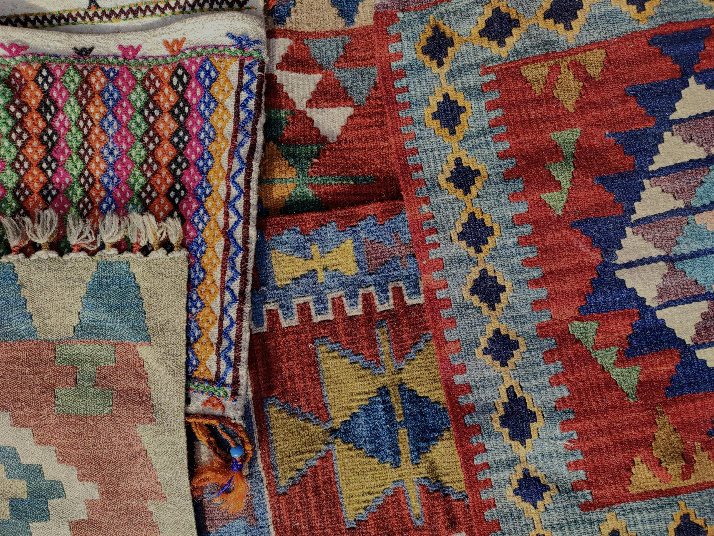

colors using rgb values
colors using hex code
position in images
Discover the beauty of green!
Visit pexels.com

Texture
"I really like the colors of fabric!"
"There is a lot selection of colors!"
"Love them all!"
image's filters
sepia filter
blur filter
invert filter
Class Exercise